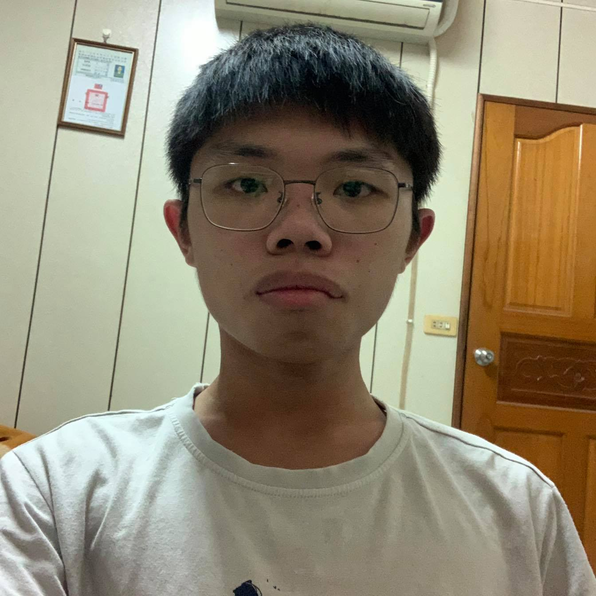

第一學期參加電競社

施冠羽
自我介紹
- 轉職的契機: 平時有在觀察新的科技應用，相關領域的發展，發現網際網路對現在生活的影響已經不可或缺，Web 的相關應用必定是未來的趨勢，由於Web3開始蓬勃發展，區塊鏈也正逐漸興起，就對這項技術非常感興趣，便我能更積極的學習 Web開發的相關課程，有朝一日可以成為軟體開發的工程師。
- 未來的展望: 學習到更多關於前端的知識，涉及到後端資料庫的應用，朝著全端工程師的目標邁進。
地址
屏東縣屏東市湖西里14鄰歸仁路79號之10
聯絡方式
Phone
0906624132
Email
753jackey@gmail.com
熟悉的語言
HTML，CSS，Javascript
Vue.js
施冠羽
社團經歷與幹部經歷
106學年度
106學年度
第二學期參加電競社
107學年度
第一學期參加系學會擔任公關部長
107學年度
擔任總務股長
108學年度
擔任副班長
工作經驗
2021/08 - 至今
星博電子:初級作業員
生產線上的作業員。對專業技能沒有幫助，但增加了一些工作經驗。
興趣，運動
慢跑
閱讀
看電影
騎腳踏車
作品集